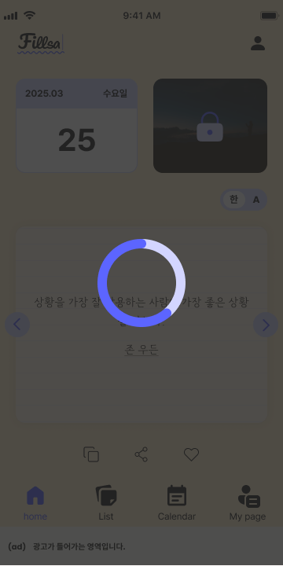
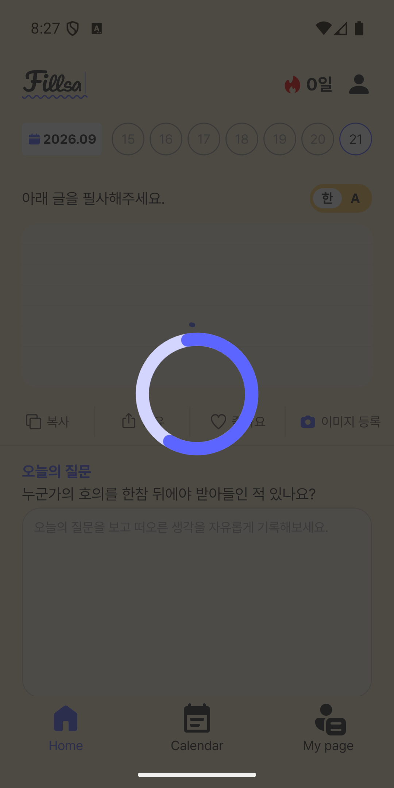

Android UI 조사 · 2026.10.04
전역 스피너는 모든 화면에 적용됐을까?
오버레이는 앱 최상위에 한 번 배치돼 있습니다. 실제로 스피너를 켜는 로딩 상태는 등록된 모든 화면에 연결돼 있지는 않습니다.
14/14전역 오버레이가 덮을 수 있는 등록 경로
6/14화면 자체에 직접 로딩 연결이 있는 경로
8/14직접 로딩 연결이 확인되지 않은 경로
결론: 부분 적용
Login, Home, DailyQuote, Calendar의 지정 API 요청과 QuoteList, Notice의 Paging refresh에서 전역 스피너를 켭니다. 나머지 경로는 오버레이 아래에 표시될 수 있지만, 해당 화면에서 로딩을 직접 등록하는 코드는 확인되지 않았습니다.
실제 기기 녹화
Medium_Phone_API_35 · 비회원 · 360×720dp · Calendar 월 변경 시도 · 2026.10.04 녹화
기존 시각 QA 증거
2026.09.21의 별도 QA에서 Figma 기준 화면과 지연된 Home API의 실제 스피너 화면을 기록했습니다. 이는 현재 모든 화면의 기능 동작을 증명하는 자료는 아닙니다.


화면별 연결 현황
“직접 연결”은 해당 경로의 ViewModel 요청에 withLoading이 있거나 화면에서 Paging refresh를 BindGlobalLoading에 전달하는 경우입니다. 공통 오버레이의 존재만으로 화면의 모든 작업이 로딩 표시 대상이 되지는 않습니다.
| 등록 경로 | 직접 연결 | 현재 코드에서 스피너를 켜는 경우 |
|---|---|---|
| Splash | 없음 | 진입 경로에 직접 연결 없음 |
| Login | 있음 | 로그인 제출 API |
| OnBoardingGuide | 없음 | 직접 연결 없음 |
| Home | 있음 | 회원 주간 인용문, 비회원 날짜별 인용문 API |
| DailyQuote | 조건부 | 로그인 회원의 Typing 인용문 조회 · 비회원은 로컬 조회 |
| Share | 없음 | 직접 연결 없음 |
| QuoteList | 있음 | Paging refresh · append/prepend 제외 |
| QuoteDetail | 없음 | 직접 연결 없음 |
| MemoInsert | 없음 | 직접 연결 없음 |
| Calendar | 있음 | 회원·비회원 월별 인용문 API |
| MyPage | 없음 | 직접 연결 없음 |
| Notice | 있음 | Paging refresh · append/prepend 제외 |
| Alert | 없음 | 직접 연결 없음 |
| NoticeDetail | 없음 | 직접 연결 없음 |
연결 구조와 검증 범위
BaseViewModel.withLoading → WithBaseErrorHandling 또는 화면의 BindGlobalLoading → owner 기반 GlobalLoadingState → MainActivity의 CircleLoadingSpinner 순서로 표시됩니다. 스피너는 전체 화면 dim과 중앙 인디케이터로 구성됩니다.
기존 QA 기록은 Home 화면의 시각 결과를 통과로 기록했으며, 입력 차단·동시 요청·화면 이탈·Paging append 등 기능 검증은 사용자 확인 대기로 남겼습니다. 이번 조사는 모든 화면의 실제 기능 통과 판정이 아닙니다.